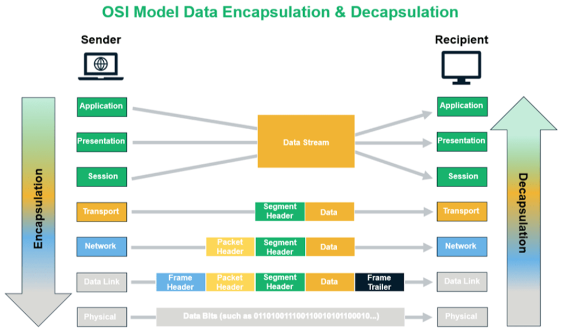

OSI Model - 7 Layers

1. Physical Layer
- Responsible for the actual physical connection between devices.
- Handles transmission of raw binary data over the medium (e.g., copper wires, fiber optics).
- Deals with aspects like voltage levels, timing, and data rate (bit rate).
- Includes hardware components like cables, switches, and network interface cards (NICs).
- Concerned with modulation, signal strength, and noise immunity.
2. Data Link Layer
- Ensures reliable data transfer between two directly connected nodes (e.g., within a local network).
- Divided into two sublayers: Logical Link Control (LLC) and Media Access Control (MAC).
- LLC handles error detection and flow control.
- MAC addresses access to shared media and manages hardware (MAC) addressing.
- Responsible for framing, addressing, error detection (CRC), and retransmission of lost frames.
3. Network Layer
- Manages the delivery of packets across multiple networks (routing).
- Handles logical addressing through IP addresses (IPv4/IPv6).
- Determines the best path for data to travel across networks (routing algorithms, such as OSPF, RIP, BGP).
- Responsible for packet forwarding, fragmentation, and reassembly.
- Provides connectionless communication (e.g., the Internet).
4. Transport Layer
- Ensures end-to-end communication between devices.
- Handles segmentation and reassembly of data (breaks data into segments).
- Provides error recovery, flow control, and retransmission of lost packets.
- Protocols: Transmission Control Protocol (TCP – reliable, connection-oriented) and User Datagram Protocol (UDP – connectionless, faster but less reliable).
- Manages port addressing, allowing multiple applications to use the network simultaneously.
5. Session Layer
- Establishes, maintains, and terminates communication sessions between applications.
- Provides synchronization, session checkpoints, and recovery (useful in cases of disconnection).
- Manages sessions and dialogues between source and destination systems (e.g., handling sessions in video streaming or remote desktop connections).
- Ensures full-duplex, half-duplex, or simplex communication.
6. Presentation Layer
- Translates data between the application layer and the lower layers (data encoding, translation, and conversion).
- Handles data formats such as encryption, compression, and encoding (e.g., JPEG, PNG, ASCII, EBCDIC, encryption standards like SSL/TLS).
- Ensures that data sent by the application layer is readable by the receiving system, despite potential differences in data representation.
7. Application Layer
- Closest to the end user, this layer interacts directly with software applications that use the network.
- Provides network services to end-user applications (e.g., email, file transfer, web browsing).
- Handles application-specific protocols like HTTP, FTP, SMTP, DNS, POP3 etc.
- Acts as an interface for communication and ensures that the network services meet user needs.